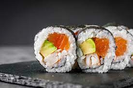

Sushi
Ingredients:
- Sushi rice.
- Bamboo sushi mat.
- plastic wrap (cling/saran wrap).
- nori seaweed sheets.
- low-sodium soy sauce.
- toasted sesame seeds.
- Sriracha.
- wasabi + pickled ginger.

Lasagna
Ingredients:
- Pound sweet Italian sausage.
- ¾ pound lean ground beef.
- ½ cup minced onion.
- 2 cloves garlic, crushed.
- 1 (28 ounce) can crushed tomatoes.
- 2 (6 ounce) cans tomato paste.
- 2 (6.5 ounce) cans canned tomato sauce.
- ½ cup water.

Pizza
Ingredients:
- Pepperoni.
- Mushroom.
- Extra cheese.
- Sausage.
- Onion.
- Black olives.
- Green pepper.
- Fresh garlic.

Cheeseburger
Ingredients:
- 2 pounds freshly ground chuck.
- 1 tablespoon onion powder.
- 1 teaspoon salt.
- 1 teaspoon freshly ground black pepper.
- 12 slices deli-counter American cheese.
- 6 large burger buns, toasted if desired.
- Ketchup.
- fresh lettuce leaves.